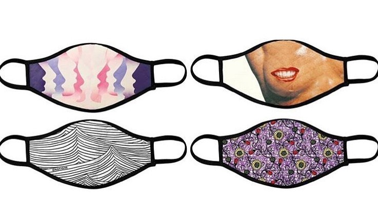

SNS를 통한 홍보 영상
전용 공간을 만들어 세계 전역의 갤러리들이 참여하는 팝업 형태의 아트쇼를 1년 내내 이어가기로 했다.
아트페어사가 전용 공간을 마련해 연중 상시 팝업쇼를 추진하는 것은 이번이
처음이다. 프리즈 런던의 에바 랭렛 예술감독은 “팬데믹이 가져온 변화에 예술계가 대응하려는 당연한 시도”라고 설명했다.
국가 간 이동이 사실상 차단된 상황에서 특정 기간에 각국의
컬렉터와 예술가들을 한자리에 모으는 기존 방식은 지속가능하지 않다고 판단했다는 것이다.
“팝업 모델은 물리적·시간적 한계를 극복하고 특정 주제를 보다 깊이 있게 살펴볼 수 있는
방법”이라고 설명했다.
‘넘버9 코크스트리트’는 3개의 공간으로 구성됐다. 갤러리들은 이 공간을 4주간 빌려 아트페어를 열 수 있다.
프리즈 측은 신진 예술가를 집중 조명하는
프로그램에 할인 혜택을 제공하고 SNS 마케팅 등도 지원할 방침이다.
마스크에 대한 인식 변화
미국과 유럽 등 서방 국가에서는 테러나 과격시위 때문에 '복면금지법'이 존재할 만큼 얼굴을 가리는 것에 거부감을 가진다. 특히, 마스크는 아픈 사람이 외출 시에 전염을 피하기 위해 불가피하게 사용한다는 게 일반적인 인식인 데다 마스크 착용 효과에 대해서도 부정적이었다.
마스크에 대한 부정적인 인식 변화를 주기 위해서 프리즈는 아티스트 이드리스 칸이 디자인한 한정판 안면 마스크를 판매하며, 수입금을 새롭게 부상하는 큐레이터들을 지원하였다.